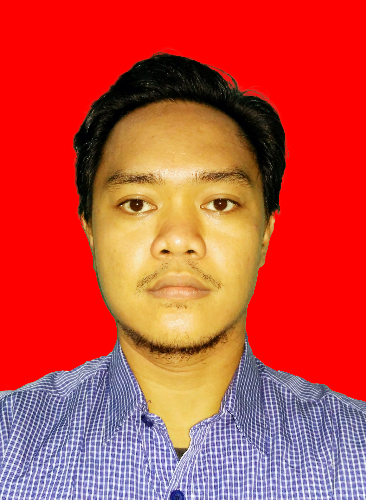
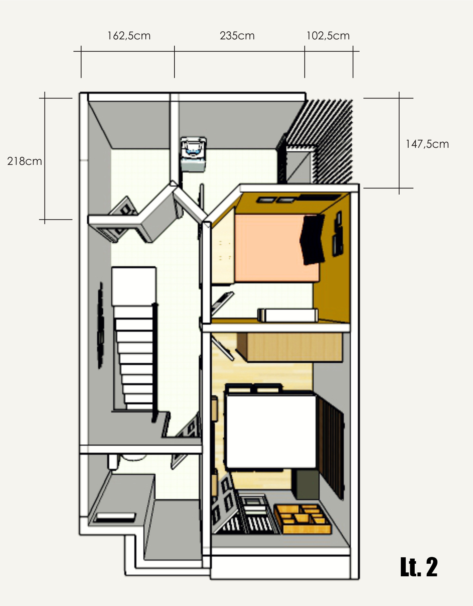
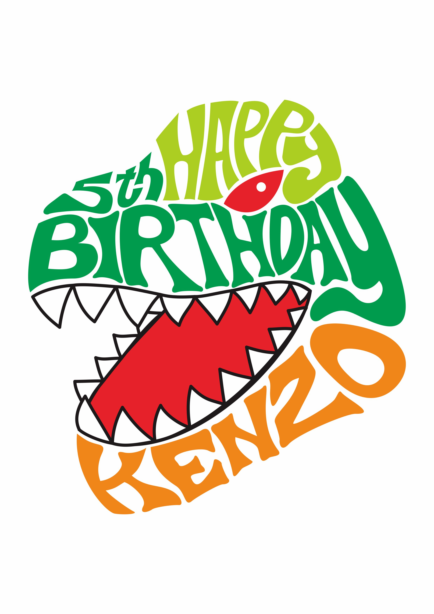
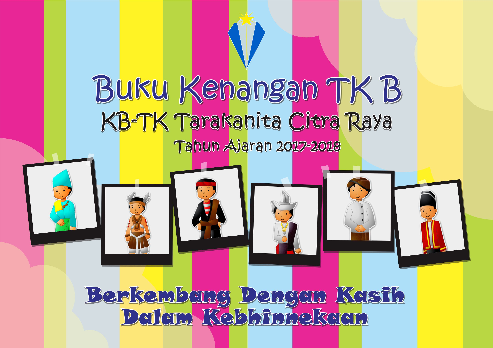

Mahasiswa | Graphic Designer | Content Creator
Saya adalah seorang mahasiswa yang memiliki minat besar dalam bidang teknologi informasi, desain web, dan pengembangan aplikasi. Saya senang mempelajari teknologi baru serta mengembangkan kemampuan dalam pemrograman.
Selain itu, saya memiliki kemampuan bekerja dalam tim, berpikir kreatif, dan berkomunikasi dengan baik. Saya percaya bahwa pembelajaran sepanjang hayat adalah kunci untuk berkembang di era digital saat ini. Saya juga aktif mengikuti berbagai pelatihan dan seminar untuk meningkatkan kompetensi diri.
Selama ini saya bekerja sebagai Freelance multimedia. Saat ini saya sedang bekerja sebagai videographer marketing communication di sebuah rumah sakit swasta yang bertugas untuk membantu dalam pembuatan content.
| Tahun | Institusi | Jurusan |
|---|---|---|
| 1998 - 2001 | SMK Negeri 4 | Bangunan |
| 2026 - Sekarang | Universitas Siber Asia | Informatika |


